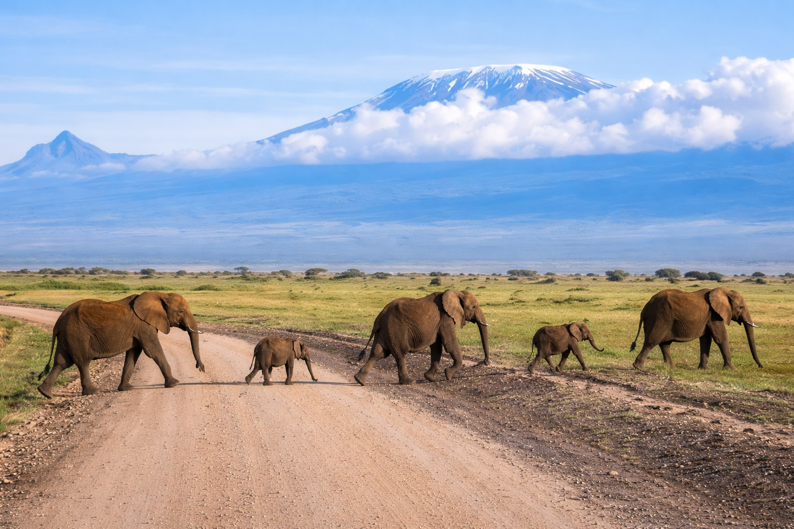

Moshi
95k
Le Kilimandjaro (Toit de l'Afrique)
Le plus haut sommet du continent (5895m)

RetourDu toit de l'Afrique aux rivages de l'archipel des épices
La Tanzanie est une destination légendaire qui offre certains des spectacles les plus saisissants de la planète. C'est ici que s'élève le Kilimandjaro, point culminant du continent, et que s'étend le Serengeti, terre de la grande migration. Entre le cratère mystique du Ngorongoro, véritable jardin d'Éden, et l'archipel de Zanzibar aux eaux turquoise et à l'histoire swahili millénaire, la Tanzanie promet un voyage entre aventure sauvage et raffinement exotique.
Explorez les 15 merveilles du patrimoine tanzanien
Le plus haut sommet du continent (5895m)

Espaces infinis et scène de la Grande Migration

Caldeira géante abritant une faune sauvage exceptionnelle

Labyrinthe historique aux influences arabes et indiennes

Eaux turquoises et sable blanc paradisiaque

Le royaume des baobabs géants et des troupeaux d'éléphants

Célèbre pour ses lions grimpeurs d'arbres et ses flamants roses

Plongée exceptionnelle et rencontre avec les requins-baleines

Vestiges médiévaux d'une puissante cité marchande swahili
Une des plus grandes réserves de faune au monde

Volcan majestueux et défi pour les randonneurs avertis

La mer intérieure africaine et les rochers de Mwanza
Safari sauvage et authentique loin des foules
Petit Serengeti accessible proche de Dar Es Salaam

Métropole vibrante et porte d'entrée de l'Afrique de l'Est
L'âme de la côte Swahili et les traditions Massaï.
La Tanzanie est un pays de tolérance et de paix, né de l'union du Tanganyika et de Zanzibar. Sa culture est profondément marquée par l'influence swahili, mélange unique d'Afrique, d'Arabie et d'Inde. C'est aussi la terre des Massaï au Nord et des Chaga au pied du Kilimandjaro. Le pays vibre au rythme de la poésie, de la musique Taarab et de l'hospitalité légendaire "Karibu Sana".
Un site classé à l'UNESCO, témoin de l'âge d'or du commerce des épices et de l'ivoire.
Les gorges d'Olduvai ont révélé les traces les plus anciennes de nos ancêtres hominidés.
Une école de peinture naïve et colorée, emblématique de l'art populaire tanzanien.
Le Kiswahili, langue nationale, est le ciment qui unit plus de 120 groupes ethniques différents.

L'excellence tanzanienne chez vous. De la pierre de Tanzanite aux épices rares de Zanzibar.
 Rare
Rare
Gemme unique au monde, trouvée uniquement au pied du Kilimandjaro, aux reflets bleus et violets.
 Premium
Premium
Coffret de clous de girofle, cannelle et cardamome fraîchement récoltés sur l'île aux épices.
 Artisanat
Artisanat
Peinture originale aux couleurs vives représentant la faune africaine dans le style traditionnel.
Un café arabica d'altitude cultivé sur les pentes fertiles du volcan, riche et équilibré.
Pagne en coton orné de proverbes swahilis, l'habit emblématique des femmes tanzaniennes.
Statue finement sculptée dans l'ébène par les maîtres sculpteurs du sud du pays.

Serengeti National Park

Stone Town, Zanzibar

Bord du Cratère

Arusha City

Nungwi, Zanzibar

Kiwengwa, Zanzibar
La cuisine tanzanienne est une fusion riche d'épices d'Orient et de produits africains généreux. Un voyage sensoriel à chaque repas.
Riz épicé riche en cardamome, clous de girofle et cumin, servi lors des fêtes.
Version locale du célèbre plat indien, avec une touche unique d'épices de l'île.
Viande grillée au feu de bois (chèvre ou bœuf), emblème de la convivialité.
Spécialité de street food de Stone Town, croquante et richement garnie.
Omelette aux frites, le snack favori des tanzaniens à toute heure.
Base solide de maïs, servie avec des légumes ou des ragoûts de viande.
Poisson grillé nappé d'une sauce onctueuse au lait de coco et épices.
Brochettes de viande marinées et grillées, très appréciées dans les rues.
Soupe traditionnelle à base de bananes plantains et de viande.
Beignets triangulaires parfaits pour accompagner le thé du matin.
Bouillon acidulé aux épices, garni de snacks croquants et légumes.
Thé au lait noir épicé, cœur des matins ensoleillés tanzaniens.
Vibrez au rythme des festivals tanzaniens, entre traditions swahili et célébrations sportives.
Zanzibar International Film Festival (Juillet), le plus grand festival d'art et de culture d'Afrique de l'Est.
Grand festival de musique africaine à Stone Town (Février), célébrant les rythmes du continent.
Course mythique au pied du géant endormi, attirant des athlètes du monde entier (Mars).
Le moment idéal pour les safaris et l'ascension du Kilimandjaro. C'est aussi la période de la grande migration au Serengeti.
Parfait pour Zanzibar et la côte. Les eaux sont calmes et claires, idéales pour la plongée et la détente.
La Tanzanie est globalement sûre. À Stone Town, respectez les codes vestimentaires (épaules et genoux couverts) par respect pour la culture locale.
Vaccin fièvre jaune souvent demandé à l'entrée. Traitement antipaludéen impératif pour les zones de safari et Zanzibar.
Demandez toujours l'autorisation avant de photographier les habitants, surtout chez les Massaï. Un petit pourboire est parfois d'usage.
Shilling Tanzanien (TZS). Le dollar US est largement accepté dans les hôtels et pour les safaris (billets post-2006).
Expert Zanzibar & Stone Town
Natif de Zanzibar, Rashid vous fera découvrir les secrets des ruelles de Stone Town et l'histoire des épices.
Guide Safari Serengeti & Ngorongoro
Avec plus de 15 ans d'expérience, Salim est un pisteur hors pair capable de vous dénicher les "Big Five".
Chef Guide Kilimandjaro
Isaac a gravi le Kili plus de 300 fois. Sa priorité est votre sécurité et la réussite de votre ascension vers le sommet.